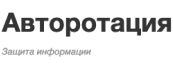

Квалификация – программист
Программирование в компьютерных системах
Программист – это специалист, создающий исходный код для программы. Такой программой может быть операционная система компьютера, видеоигра, web или мобильное приложение и даже алгоритм работы микроволновки
- 2 г. 10 мес На базе 9 классов
- 3 г. 10 мес На базе 11 классов
- 27 500 ₽ Цена за семестр
- 50 000 ₽ Цена за год

Реализуется в соответствии с Приказом Минобрнауки России от 9 декабря 2016г. № 1547 «Об утверждении федерального государственного образовательного стандарта среднего профессионального образования по специальности 09.02.07 Информационные системы и программирование
- Связь, информационные и коммуникационные технологии.
Область профессиональной деятельности выпускников:
- компьютерные системы;
- автоматизированные системы обработки информации и управления;
- программное обеспечение компьютерных систем (программы, программные комплексы и системы);
- математическое, информационное, техническое, эргономическое, организационное и правовое обеспечение компьютерных систем;
- первичные трудовые коллективы.
Объектами профессиональной деятельности выпускников являются:
- Разработка программных модулей программного обеспечения для компьютерных систем.
- Осуществление интеграции программных модулей.
- Сопровождение и обслуживание программного обеспечения компьютерных систем.
- Разработка, администрирование и защита баз данных.
Объектами профессиональной деятельности выпускников являются:
Описание профессии
ПРОГРАММИСТ – это специалист, создающий исходный код для программы. Такой программой может быть операционная система компьютера, видеоигра, web или мобильное приложение и даже алгоритм работы микроволновки. Программный код пишется на специальном языке программирования. Он состоит из обычных слов и некоторых специальных символов. Сегодня насчитывается несколько сотен языков программирования, но самые распространенные из них – Java, Python, PHP, C#, JavaScript, C, С++, Objective-C, Swift. Какой язык программирования выбрать, программист решает сам в зависимости от конкретной задачи (сделать игру, приложение для web или программу для сервера) и собственных знаний. Квалифицированный программист уверенно использует 2-4 языка.
По специализации программисты делятся на системных, прикладных и веб-программистов. Прикладные программисты занимаются написанием различных программ и приложений: игры (например, популярная игра Angry birds), офисные приложения (например, Microsoft Office Word) и многое другое. Системные программисты занимаются созданием операционных систем (например, Android или iOS). Веб-программисты разрабатывают интернет-сайты и программы, которые поддерживают работу этих сайтов.
На сайтах вакансий вы найдете разделение программистов по тем языкам, с которыми они работают: программист C++, программист Delphi, PHP-программист. А также по типам задач, которые они выполняют: программист баз данных, фронтенд / бекенд разработчик, мобильный / десктоп разработчик, программист 1С, программист Битрикс, геймдев, архитектор ПО, системный инженер и т.д.
Практика и трудоустройство
-
Digital-агентство Rutorika («Руторика»)
Было образовано в 2009 году в Краснодаре. Сегодня команда агентства объединяет сотрудников, среди которых: менеджеры и продюсеры, креаторы и дизайнеры, программисты и верстальщики, мобильные разработчики, иллюстраторы и копирайтеры. Среди клиентов: Магнит, Fasten, такси Ancor, Compass Pools, Limpid Pools, Freework, Ruport, Жемчужина России, Кайрос, Beton Brutt, Меритон, Axis, Ruport, Казак ФМ, KIA, банк «Первомайский», регби-клуб «Кубань» и другие.
-

ООО «Авторотация»
Молодая компания, но настоящий эксперт в сфере оказания услуг по защите информации. Каждый сотрудник не просто специалист в своей сфере - он настоящий профессионал своего дела. Услуги, которые оказывает компания: - Техническая поддержка - Поставка средств защиты информации - Проектирование систем защиты информации - Комплексный аудит информационной безопасности - Защита персональных данных
-
ООО «УЦ Орбита»
Предоставляет услуги удостоверяющего центра, который работает с 2004 года и является основным элементом автоматизации информационных систем с применением ЭП. На сегодняшний день клиенты ООО «УЦ Орбита» успешно обмениваются электронными документами с Федеральной налоговой службой, Пенсионным фондом, Федеральной службы государственной регистрации, кадастра и картографии (Росреестр), Федеральной службой государственной статистики, Федеральной службой по тарифам, Фондом социального страхования, Федеральным фондом обязательного медицинского страхования, Департаментом социальной защиты населения. Предоставляет услуги удостоверяющего центра, который работает с 2004 года и является основным элементом автоматизации информационных систем с применением ЭП. На сегодняшний день клиенты ООО «УЦ Орбита» успешно обмениваются электронными документами с Федеральной налоговой службой, Пенсионным фондом, Федеральной службы государственной регистрации, кадастра и картографии (Росреестр), Федеральной службой государственной статистики, Федеральной службой по тарифам, Фондом социального страхования, Федеральным фондом обязательного медицинского страхования, Департаментом социальной защиты населения.